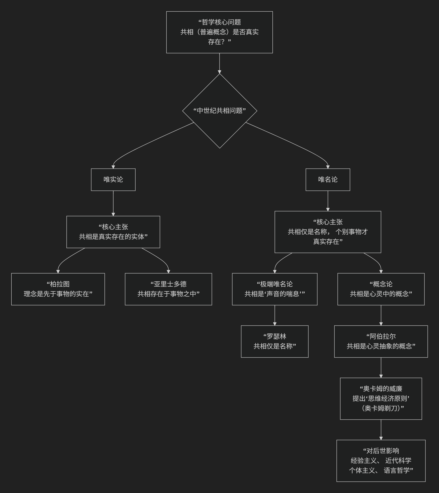

George Edward Moore
根据乔治·爱德华·摩尔（George Edward Moore）常识唯实论哲学
摩尔是20世纪初英国分析哲学的开创者之一，他的“常识唯实论”是对当时占据主导地位的唯心论（尤其是布拉德雷和麦克塔加特的思想）的一次强力反击。其哲学核心可以概括为：坚决捍卫“常识”世界观的真实性与可靠性，认为我们对诸如“外部世界存在”、“他人有心”等基本常识信念的确定性，远高于任何试图否定它们的哲学论证的确定性。
摩尔的哲学方法极具特色，其核心思想可以通过下图清晰地展现其论证结构与哲学意涵：

以下，我们将沿此脉络，深入解析摩尔哲学的核心要义。
一、核心立场：为常识辩护
摩尔的出发点是对哲学怀疑论的彻底拒绝。
批判靶子：他反对各种形式的唯心论和怀疑论，这些理论声称外部世界是虚幻的、时间是不真实的、或我们无法知道他人心灵的存在。
核心主张：摩尔认为，某些由“常识”持有的信念是 确定无疑、不可怀疑的。这些信念构成了我们理解世界和进行哲学讨论的 稳固基础。哲学的错误不在于常识，而在于哲学家们试图用复杂而可疑的论证来否定简单而确定的真理。
著名清单：在《为常识辩护》一文中，他列举了一些确定为真的常识命题，例如：
“我的身体存在并且已经存在了一段时间。”
“地球在我出生前已存在很久。”
“其他具有类似身体的人也存在，他们拥有自己的思想和体验。”
二、著名论证：举起双手的证明
摩尔最广为人知的举动是在一次演讲中**举起双手**，以此证明外部世界的存在。
论证过程：
前提1：“这是一只手”（举起左手）。
前提2：“这是另一只手”（举起右手）。
结论：“因此，至少存在两个外部物体，所以外部世界是存在的。”
深层逻辑：这个看似简单的举动蕴含深刻的哲学策略。摩尔并非要“证明”给一个彻底的怀疑论者看，而是要表明：任何否认外部世界存在的哲学论证，其前提的确定性都远远低于“这是一只手”这个简单事实的确定性。 因此，如果论证导出了违背常识的结论，那么错误的一定是论证本身，而不是常识信念。这是一种**归谬法**。
三、哲学方法：分析而非颠覆
摩尔不仅是常识的捍卫者，也是 概念分析 方法的先驱。
哲学的真正任务：摩尔认为，哲学的任务 不是颠覆常识，而是 分析和澄清常识信念中所包含的概念。例如，当我们说“这是一张桌子”时，我们需要分析“存在”、“物质对象”、“桌子”等概念的确切含义及其关系。
分析哲学的开端：这项工作开启了分析哲学的传统，将哲学的关注点从构建宏大体系转向了对语言和概念的精细分析。
四、伦理学贡献：元伦理学的开创
在伦理学领域，摩尔同样做出了里程碑式的贡献，其著作《伦理学原理》开创了**元伦理学**。
核心命题：“善”是不可定义的
摩尔认为，“善”是一个 简单的、非自然的属性，就像“黄色”一样，无法被分解或用其他属性来定义。
任何试图用自然属性（如“快乐”、“欲望满足”）来定义“善”的尝试都犯了 “自然主义谬误”。
开放问题论证：
对于任何定义（如“善=快乐”），我们总可以有意义地问：“快乐是善的吗？”
如果这个问题是开放的、有意义的，就证明“善”不等于“快乐”。因此，“善”是独特的、不可还原的。
五、核心要义总结
理论维度 |
核心命题 |
关键概念与贡献 |
|---|---|---|
形而上学/知识论 |
常识信念（如外部世界存在）是确定无疑的，构成哲学的基石。 |
常识唯实论、对怀疑论的反驳、确定性等级 |
哲学方法论 |
哲学的任务是分析常识信念中的概念，而非否定常识。 |
概念分析、分析哲学先驱 |
著名论证 |
“举手证明”：外部世界存在的确定性高于任何怀疑论论证。 |
归谬法、日常语言论证 |
伦理学 |
“善”是不可定义的简单属性，定义它即犯”自然主义谬误”。 |
元伦理学、开放问题论证、非自然属性 |
六、思想特质与影响
日常语言的清晰性：摩尔坚持用日常语言进行哲学表达，反对晦涩的哲学术语，认为这往往是哲学混乱的根源。
稳健的实在论：他的哲学提供了一种稳健的、非独断的实在论，即相信一个独立于心灵的、由日常物体和他人心灵构成的世界的真实存在。
深远影响：他影响了后来的整个分析哲学运动，尤其是维特根斯坦（后期）和日常语言学派（如奥斯汀）。他的元伦理学至今仍是该领域的核心议题。
七、总结
总而言之，G. E. 摩尔的核心思想在于，他是一位 “常识的捍卫者”和“分析的清道夫” 。他教导我们，在从事哲学思考时，不应为了迎合某种理论而牺牲我们最坚实、最直接的信念。 当精妙的哲学论证与简单的常识事实冲突时，更理性的做法是 检查论证而非抛弃常识。
他的全部工作是对 哲学傲慢 的一次矫正，重新将哲学锚定在 人类共同的经验和语言 之中。在这个意义上，他不仅是分析哲学的开创者，更是一位让哲学重归清醒与谦逊的思想家。
- Grok
- 1. The Indubitability of Common Sense Propositions: Judicial “Disruption” as Unproven Skeptical Denial
- 2. Direct Realism and the External World: “Intent” as Idealist Abstraction Over Perceptual Particulars
- 3. Ethical Intuitionism and Non-Natural Properties: Coercive “Justice” as Misjudged Moral Indefinables
- Conclusion: Moore’s Lens on the Case—Skeptical Shadows Over Indubitable Hands
- Copilot
- Deepseek
- Gemini
摩尔不仅是常识唯实论的代表人物，更被公认为 现代元伦理学的开创者 。他的工作在这两个领域是紧密相连、互为支撑的。
以下将详细解释他如何将常识唯实论的哲学方法应用于伦理学，从而开创了元伦理学这一全新的哲学领域。
核心论证：从常识哲学到元伦理学革命
摩尔的思想具有高度的统一性。他在本体论和知识论上捍卫“常识”的方法，直接引导了他对伦理学根本问题的革命性处理。
核心领域 |
摩尔的立场与方法 |
具体表现与影响 |
|---|---|---|
常识唯实论 / 直接知觉唯实论 |
反对怀疑论，捍卫常识世界的真实性。 方法：认为某些基本命题（如”这是一只手”）是自明的、不可怀疑的，其真实性比任何精巧的哲学论证都更确定。 |
著名举动：举起双手说”这是一只手，那是另一只”，以此证明外部世界的存在。其论点在于，怀疑论者的论证无法推翻我们直接感知的、最基本的常识信念。 |
现代元伦理学（开创） |
将上述分析方法应用于伦理学本身。 核心问题从”什么行为是善的？”转变为 “‘善’这个词意味着什么？”。这是典型的元伦理学问题。 |
核心著作：1903年出版的 《伦理学原理》 ，这本书被视为现代元伦理学的奠基之作。 |
摩尔的元伦理学核心贡献：自然主义谬误与“善”的不可定义性
摩尔在《伦理学原理》中提出了两个革命性的观点，彻底改变了伦理学的讨论方式：
自然主义谬误
内容：摩尔指出，许多传统的伦理理论（如功利主义说“善是快乐”，进化伦理学说“善是更进化的”）都犯了一个根本错误——即试图用一个**自然的或超自然的属性**来定义“善”这个最简单的概念。
论证：他提出了著名的 “开放问题论证” 。对于任何提出的定义（如“善=快乐”），我们总可以有意义地问：“快乐是善的吗？”如果这个问题是开放的、有意义的，那么就证明“善”不等于“快乐”。而“快乐是快乐的吗？”这个问题是封闭的、无意义的。因此，“善”不能被任何其他属性定义。
意义：这一批判将伦理学从关于世界事实的讨论（心理学、生物学、神学）中剥离出来，使其成为一个独立的、处理 基本价值概念 的哲学领域。
“善”是简单的、不可分析的非自然属性
内容：既然“善”像“黄色”一样，是一个简单的、不可再分的概念，我们无法用其他东西来定义它。我们只能通过一种 直觉 来直接认识它。他认为“善”是一种 非自然的属性，即它虽然存在于对象或行为中，但不能被科学经验所分析。
意义：这确立了直觉主义在元伦理学中的早期地位，并引发了长达一个世纪的关于道德语言本质、道德属性是否实在的争论。
结论：毋庸置疑的开创者
因此，G. E. 摩尔的身份是双重的，且后者源于前者：
作为常识唯实论者，他提供了一种哲学方法：拒绝怀疑论，相信直接自明的常识，并对基本概念进行清晰的分析。
作为现代元伦理学的开创者，他将这种方法应用于伦理学领域，首次清晰地将伦理学的“第一级问题”（什么是对的？）和“第二级问题”（“对”意味着什么？）区分开来，并将焦点放在了后者之上。
正是通过摩尔的工作，伦理学才开始系统性地反思自身的概念基础、语言和逻辑，从而诞生了以 语言分析、概念考察 为特征的现代元伦理学。因此，他不仅是开创者，更是奠基人。